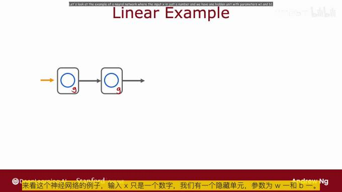
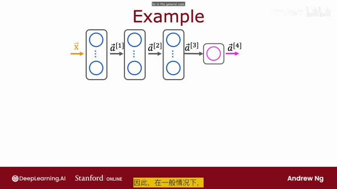

00:03我们来看看为什么神经网络需要激活函数，以及如果在神经网络的每个神经元中都使用线性激活函数，它为什么就行不通。
00:16回顾一下这个需求预测的例子。
00:19如果我们为这个神经网络中的所有节点都使用线性激活函数，会发生什么？
00:26结果是，这个大型神经网络将变得和线性回归没什么两样。
00:33这就违背了使用神经网络的初衷，因为它只能拟合我们第一门课中学过的线性回归模型，无法处理任何更复杂的情况。
00:47我们用一个更简单的例子来说明。
00:51来看这个神经网络的例子，输入 x 只是一个数字，我们有一个隐藏单元，参数为 w 一和 b 一。

01:04它输出 a 一，这里也只是一个数字。
01:08然后第二层是输出层，它也只有一个输出单元，参数为 w 二和 b 二，并输出 a 二，这同样只是一个数字，N 个标量，也就是神经网络的输出 f（x)。
01:26我们来看看，如果所有地方都使用线性激活函数，即 g(z）等于 z，这个神经网络会怎样。
01:37那么，为了计算 a-关于的函数，神经网络会使用 a 一等于 g（w 一乘 x 加 b 一)。
01:49但 g(z)等于 z，所以这就是 w 一乘 x 加 b 一。
01:57然后 a 二等于 w 二乘 a 一加 b 二，因为 g (z) 等于 z。
02:06我把这个 a 一的表达式代入进去。
02:11就变成了 w 二乘(w 一 x 加 b 一) 加 b 二。
02:22简化后，得到 w 二 w 一乘 x 加 w 二 b 一加 b 二。
02:35结果是，如果我将 w 设为 w 二乘 w 一，并将 b 设为后面这一堆，那么我们刚刚展示的 a 二就等于。
02:51所以 a 二只是输入 x 的一个线性函数。
02:56与其使用带有一个隐藏层和一个输出层的神经网络，我们还不如直接使用一个线性回归模型。
03:04如果你熟悉线性代数，这个结果源于这样一个事实：线性函数的线性函数本身还是线性函数。
03:14这就是为什么在神经网络中拥有多个层，并不能让神经网络计算出更复杂的特征，或学到比线性函数更复杂的东西。

03:28如果你有一个像这样的多层神经网络，并且对所有隐藏层都使用线性激活函数，同时也对输出层使用线性激活函数，那么结果就是这个模型计算出的输出完全等价于线性回归。
03:42那么结果就是这个模型计算出的输出完全等价于线性回归。
03:49输出 A 四可以表示为输入特征 x 的线性函数加 b。
03:58或者换一种情况，如果我们仍对所有隐藏层，也就是这里的三层隐藏层，使用线性激活函数，但我们为输出层使用逻辑激活函数，那么你会发现，这个模型就等价于逻辑回归。
04:20在这种情况下，A 四可以被表示为一除以(一加 e 的负 (w x 加 b)次方)，其中 w 和 b 是某些值。
04:32所以，这个大型神经网络能做到的，逻辑回归也都能做到。
04:38这就是为什么一条通用的经验法则是，不要在神经网络的隐藏层中使用线性激活函数。
04:46事实上，我一般推荐使用 ReLU 激活函数，应该就完全够用了。
04:53所以，这就是为什么神经网络需要在所有地方都使用线性激活函数之外的激活函数。
05:01到目前为止，你已经学会了为二分类问题构建神经网络，其中要么是零要么是一，也为回归问题构建，其中可以取负值或正值，或者只取正值和非负值。
05:20在下一个视频中，我想和你分享一个你目前所学的分类问题的推广。
05:27具体来说，就是当不只取两个值，而是可能取三个、四个、十个甚至更多个类别值的情况。
05:38我们来看看如何为这类分类问题构建一个神经网络。